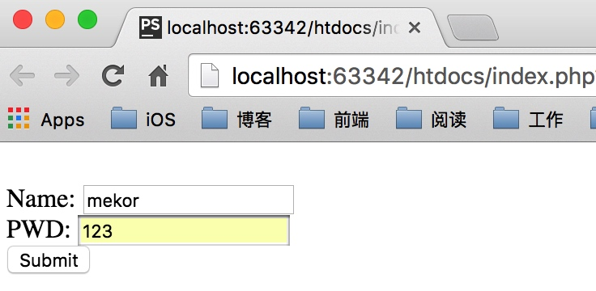
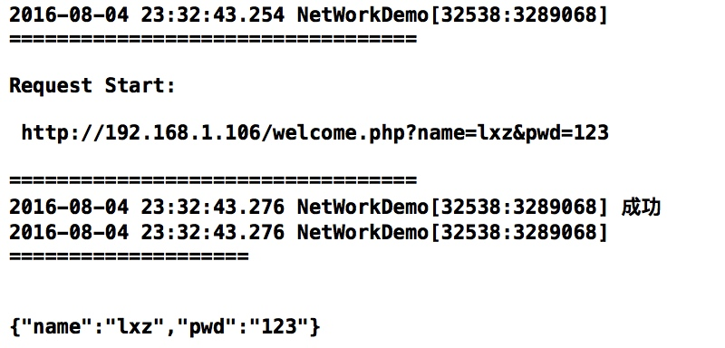
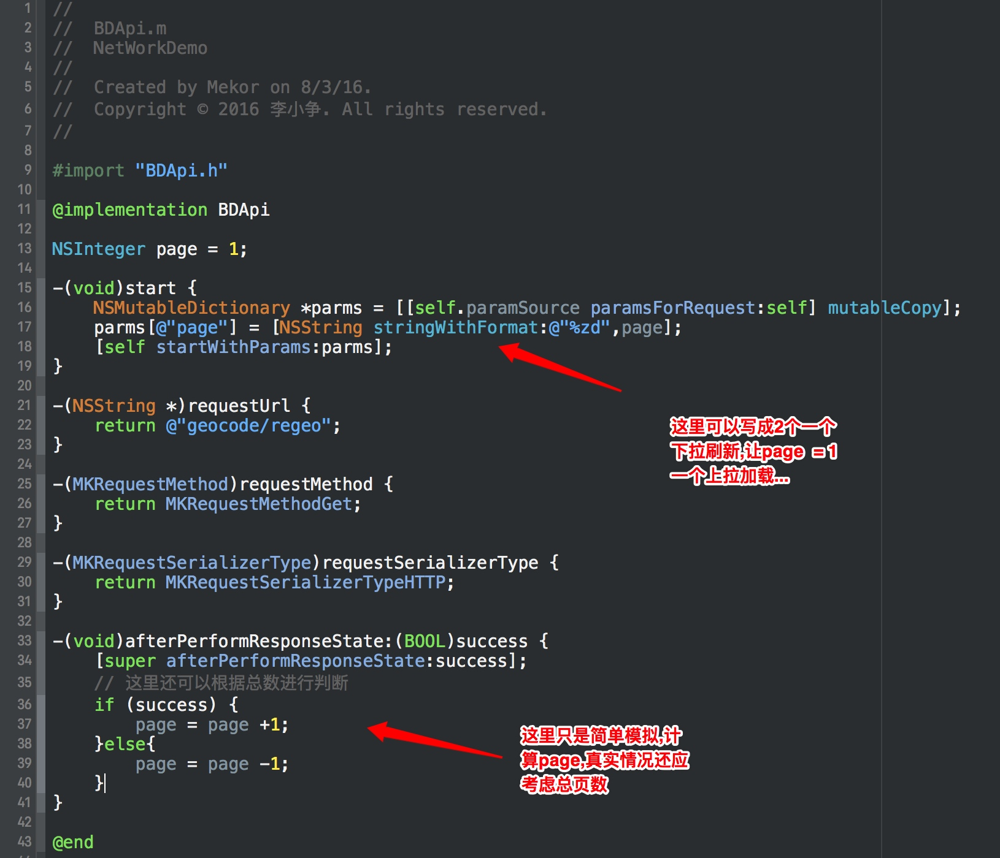

网络切面化处理
什么是面向切片编程
看考<禅与Objective-C 编码艺术>第11章 面向切面编程. 本文中技术部分参考YTKNetwork和RTNetworking代码实现,拜读了iOS应用架构谈 网络层设计方案和猿题库的两篇使用介绍并根据根据个人理解修改部分功能实现,这篇文章主要就是进行思路的整理,一步一步制造自己想要的网络请求轮子.
Aspect Oriented Programming (AOP,面向切面编程)在OC中意味着可以通过运行时的特性来为切面添加合适的代码.简单说可以添加类似行为:
- 在类的特定方法调用前运行特定的代码
- 在类的特定方法调用后运行特定的代码
- 增加代码来代替原来的类的方法的实现
网络怎么切面
上面已经说了什么是面向切面编程,那么网络中怎么切面?最主要的就是找到合适的方法,然后在它的前后都切一刀.由于项目中使用的是AFNetworking所以适合我们的特定方法应该是进行网络请求的关键代码,如下:
/**
Creates an `NSURLSessionDataTask` with the specified request.
@param request The HTTP request for the request.
@param completionHandler A block object to be executed when the task finishes. This block has no return value and takes three arguments: the server response, the response object created by that serializer, and the error that occurred, if any.
*/
- (NSURLSessionDataTask *)dataTaskWithRequest:(NSURLRequest *)request
completionHandler:(nullable void (^)(NSURLResponse *response, id _Nullable responseObject, NSError * _Nullable error))completionHandler;
当然,如果需要上传下载进度的话
/**
Creates an `NSURLSessionDataTask` with the specified request.
@param request The HTTP request for the request.
@param uploadProgressBlock A block object to be executed when the upload progress is updated. Note this block is called on the session queue, not the main queue.
@param downloadProgressBlock A block object to be executed when the download progress is updated. Note this block is called on the session queue, not the main queue.
@param completionHandler A block object to be executed when the task finishes. This block has no return value and takes three arguments: the server response, the response object created by that serializer, and the error that occurred, if any.
*/
- (NSURLSessionDataTask *)dataTaskWithRequest:(NSURLRequest *)request
uploadProgress:(nullable void (^)(NSProgress *uploadProgress))uploadProgressBlock
downloadProgress:(nullable void (^)(NSProgress *downloadProgress))downloadProgressBlock
completionHandler:(nullable void (^)(NSURLResponse *response, id _Nullable responseObject, NSError * _Nullable error))completionHandler;
这个应该是你的选择,这里只说下网络请求,所以就以第一种为例了.
我们能在网络请求之前与之后做些什么呢?
- 操作网络请求之前(取消,判断是否重复...)
- 操作网络请求之后(缓存,错误处理...)
- ...
进行网络请求核心代码
- (void)addRequest:(NSURLRequest *)request {
NSLog(@"\n==================================\n\nRequest Start: \n\n "
@"%@\n\n==================================",
request.URL);
// 跑到这里的block的时候，就已经是主线程了。
__block NSURLSessionDataTask *dataTask = nil;
dataTask = [_manager
dataTaskWithRequest:request
completionHandler:^(NSURLResponse *_Nonnull response,
id _Nullable responseObject,
NSError *_Nullable error) {
NSNumber *requestID = @([dataTask taskIdentifier]);
[_requestsRecord removeObjectForKey:requestID];
NSData *responseData = responseObject;
NSString *responseString =
[[NSString alloc] initWithData:responseData
encoding:NSUTF8StringEncoding];
NSLog(@"responseString:%@",responseString);
if (error) {
NSLog(@"error: %@",error);
#warning TODO: 失败回掉
NSLog(@"这里应该进行失败回掉");
} else {
// 检查http response是否成立。
#warning TODO: 成功回掉
NSLog(@"这里应该进行成功回掉");
}
}];
// 添加到请求列表
NSNumber *requestId = @([dataTask taskIdentifier]);
_requestsRecord[requestId] = dataTask;
[dataTask resume];
}
创建NSMutableURLRequest
需要NSMutableURLRequest参数,所以创建一个
AFHTTPRequestSerializer *httpRequestSerializer = [AFHTTPRequestSerializer serializer];
httpRequestSerializer.timeoutInterval = 20.0f;
httpRequestSerializer.cachePolicy = NSURLRequestUseProtocolCachePolicy;
/// 网络请求头部插入一些内容
[httpRequestSerializer setValue:[[NSUUID UUID] UUIDString] forHTTPHeaderField:@"xxxxxxxx"];
NSMutableURLRequest *request = [httpRequestSerializer requestWithMethod:@"GET"
URLString:@"http://www.baidu.com"
parameters:nil
error:NULL];
可以看到,上面注释的地方说明我们可以在这里搞事情啊,这个稍后会用到
对了,不要忘记设置info.plist
<key>NSAppTransportSecurity</key>
<dict>
<key>NSAllowsArbitraryLoads</key>
<true/>
</dict>
创建request然后请求,[[MKNetWorkAgent sharedInstance] addRequest:request];结果如下,百度HTML页面去除了部分代码:
2016-08-02 15:36:13.721 NetWorkDemo[56429:4922365]
==================================
Request Start:
http://www.baidu.com
==================================
2016-08-02 15:36:13.838 NetWorkDemo[56429:4922365] responseString:<!DOCTYPE html>
<html>
<!--STATUS OK-->
<head>
<meta http-equiv="Content-Type" content="text/html; charset=UTF-8">
<title>百度一下,你就知道</title>
<meta http-equiv="Cache-control" content="no-cache">
<meta name="viewport" content="width=device-width,minimum-scale=1.0,maximum-scale=1.0,user-scalable=no">
<style type="text/css">
/*去掉css样式*/
</style>
</head>
<body>
<div class="wrap">
<div class="lg">
<img src="//m.baidu.com/static/index/u.png" alt="百度首页">
</div>
<form action="//m.baidu.com/s?" method="get">
<div class="word-wrap">
<input type="text" name="word" maxlength="64" size="17" id="word">
</div>
<input type="submit" value="百度一下" class="bn">
</form>
<div class="d">
<!-- 去掉了尾部 -->
</div>
</div>
</body>
</html>
2016-08-02 15:36:13.839 NetWorkDemo[56429:4922365] 这里应该进行成功回掉
这说明已经能够进行网络请求了.
........... 2016.8.3更新.............
随着项目的增长,有些接口我们可能需要在不同的地方调用,这是需求把请求单独拿出来.在这里我们创建一个MKBaseRequest,所有的接口都继承自base,这样就能够满足我们的需求了.
需求出来了,怎么解决呢?
首先修改进行网络请求核心代码为- (void)addRequest:(MKBaseRequest *)request,MKBaseRequest里面必须要提供可供访问的url,因为NSURLRequest的创建需要url.
在MKBaseRequest中添加:
/// 请求的URL
- (NSString *)requestUrl;
使用方法而不是属性的原因就是为了方便子类的重写.- (void)addRequest:(MKBaseRequest *)request实现中由于没有NSURLRequest所以需要根据MKBaseRequest提供的url进行创建,添加代码:
NSURLRequest *requestTest = [NSURLRequest requestWithURL:[NSURL URLWithString:[request requestUrl]]];
同理,我们还可以在MKBaseRequest中添加其他限制项,例如:
/// 请求的BaseURL
- (NSString *)baseUrl;
/// 请求的cdnURL
- (NSString *)cdnUrl;
/// 请求的连接超时时间，默认为60秒
- (NSTimeInterval)requestTimeoutInterval;
/// 请求的参数列表
- (nullable id)requestArgument;
/// Http请求的方法
- (MKRequestMethod)requestMethod;
/// 是否使用cdn的host地址
- (BOOL)useCDN;
写到这里,如果我们很多接口都设置类似baseUrl之类的可以提取出来还有些必须的参数,在app进入的时候一起设置.这时我们需要创建MKNetworkConfig来管理这些内容.
........... 2016.8.4更新.............
本地模拟登陆
做个简单的模拟登陆登陆页面:
<form action="welcome.php" method="get"><br>
Name: <input type="text" name="name" /><br>
PWD: <input type="text" name="pwd" /><br>
<input type="submit" /> </form>
welecome.php中简单的输出刚刚输入的内容.
<!DOCTYPE html>
<html lang="en">
<head>
<meta charset="UTF-8">
<title>Citynight</title>
</head>
<body>
您输入的账号是:
<?php echo $_GET["name"]; ?>
.<br />
密码是:
<?php echo $_GET["pwd"]; ?>
</body>
</html>
登陆界面的样子:

点击提交后:

已经能够得到正确的结果了.
既然网页端没有问题,那么就修改成返回json格式数据给客户端
<?php
$map = array(
'name' => $_GET["name"],
'pwd' => $_GET["pwd"]
);
echo json_encode($map);
测试已经能够正常返回了:

怎样传递参数
/// 请求的参数列表
- (nullable id)requestArgument;
上面是原先设置的传递参数的方式,我感觉这样做不是很方便,比如需要传递的参数是变化的,可能就需要init的时候添加参数,这时如果参数的数量还比较多可能就比较麻烦了.
我现在采用的是通过代理的方法实现.
/// 数据源:获得所需要的参数
@protocol MKRequestParamSource <NSObject>
@required
- (NSDictionary *)paramsForRequest:(MKBaseRequest *)request;
@end
我们创建的时候如果需要参数必须设置代理,并实现
/// request paramSource
@property (nonatomic, weak, nullable) id<MKRequestParamSource> paramSource;
这样做是模仿数据源的代理方法,比较容易理解.
2016.8.23更
如何进行分页
开发中我们经常遇到需要上拉加载更多的需求,参数中的page是动态变化的.这个轮子也对此作了处理,如下:
/// MKNetWorkAgent中添加带参数的网络请求
- (void)addRequest:(MKBaseRequest *)baseRequest WithParams:(nullable id)params;
//MKBaseRequest 中添加方法用于获取当前状态
/* 子类重写必须写 super 否则 isLoading 状态不会更改*/
- (void)beforePerformRequestState;
/// success: 判断成功还是失败
- (void)afterPerformResponseState:(BOOL)success;
具体使用:
